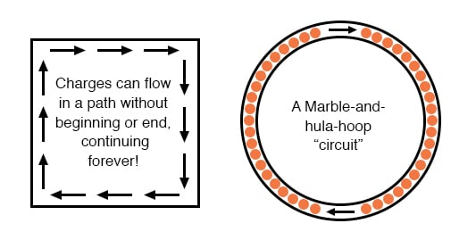
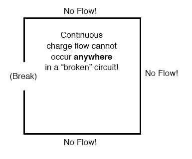
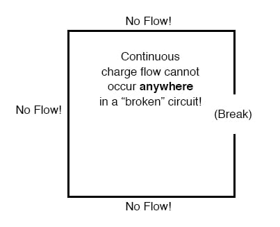

You might have been wondering how charges can continuously flow in a uniform direction through wires without the benefit of these hypothetical Sources and Destinations. In order for the Source-and-Destination scheme to work, both would have to have an infinite capacity for charges in order to sustain a continuous flow!
Using the marble-and-tube analogy from the previous page on conductors, insulators, and electron flow, the marble source and marble destination buckets would have to be infinitely large to contain enough marble capacity for a “flow” of marbles to be sustained.
The answer to this paradox is found in the concept of a circuit: a never-ending looped pathway for charge carriers. If we take a wire, or many wires, joined end-to-end, and loop it around so that it forms a continuous pathway, we have the means to support a uniform flow of charge without having to resort to infinite Sources and Destinations:

Each charge carrier advancing clockwise in this circuit pushes on the one in front of it, which pushes on the one in front of it, and so on, and so on, just like a hula-hoop filled with marbles. Now, we have the capability of supporting a continuous flow of charge indefinitely without the need for infinite supplies and dumps. All we need to maintain this flow is a continuous means of motivation for those charge carriers, which we’ll address in the next section of this chapter on voltage and current.
Continuity is just as important in a circuit as it is in a straight piece of wire. Just as in the example with the straight piece of wire between the Source and Destination, any break in this circuit will prevent charge from flowing through it:

An important principle to realize here is that it doesn’t matter where the break occurs. Any discontinuity in the circuit will prevent charge flow throughout the entire circuit. Unless there is a continuous, unbroken loop of conductive material for charge carriers to flow through, a sustained flow simply cannot be maintained.

REVIEW: